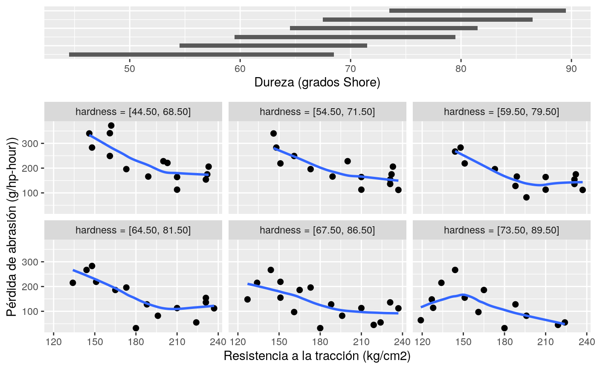
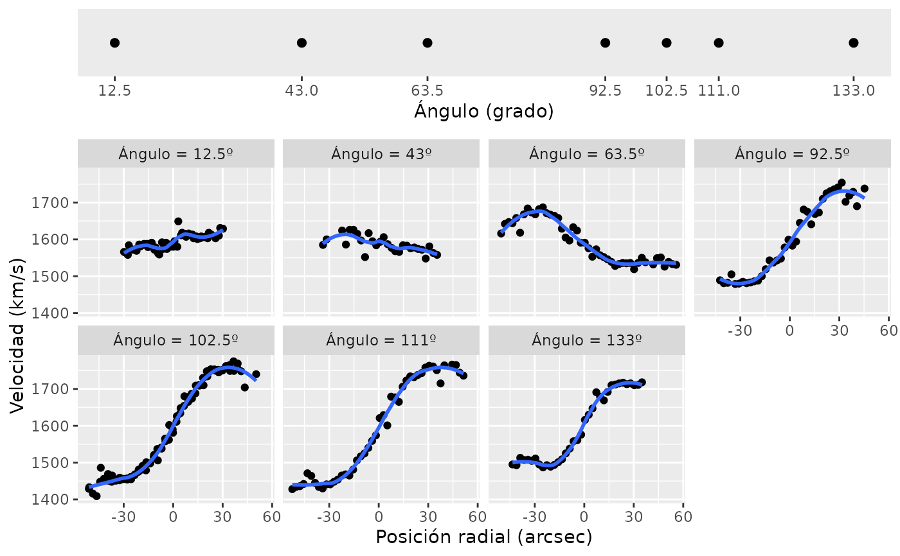
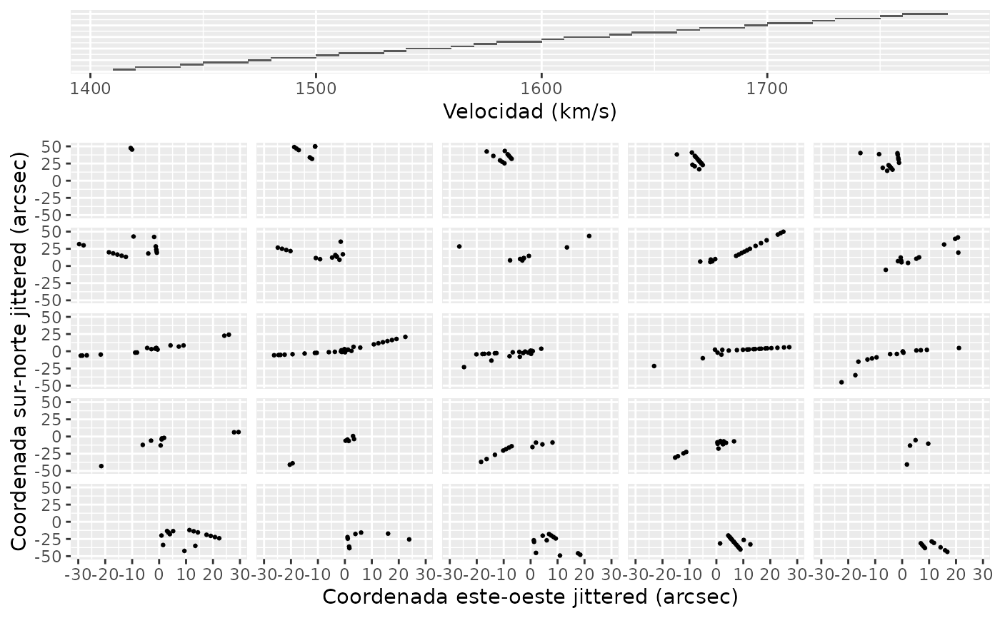

Implements conditional plots or coplots.
gg_coplot( df, x, y, faceting, number_bins = 6, overlap = 0.5, equal_length = TRUE, loess = TRUE, loess_span = 3/4, loess_degree = 1, loess_family = "gaussian", ylabel = quo_text(y), xlabel = quo_text(x), facet_label = quo_text(faceting), facet_labeller = NULL, show_intervals = TRUE, intervals_height = 0.25, remove_strip = FALSE, facets_nrow = NULL, hline_at = NULL, ... )
| df | dataframe |
|---|---|
| x | numeric variable for x-axis |
| y | numeric variable for y-axis |
| faceting | faceting numeric variable |
| number_bins | integer; the number of conditioning intervals |
| overlap | numeric < 1; the fraction of overlap of the conditioning variables |
| equal_length | if `overlap = 0` non overlaping intervals are produced all with same length if `equal_length` is `TRUE` (default) or with the same number of values otherwise. |
| loess | logical; should a loess smoothing curve be added to the coplots? Defaults to TRUE. |
| loess_span | span parameter for loess |
| loess_degree | degree parameter for loess |
| loess_family | famiyly argument for the loess() function |
| ylabel | label for y-axis |
| xlabel | label for x-axis |
| facet_label | label for faceting variable |
| facet_labeller | defaults to NULL so facet labels are automatically produced, but can take a fuction to be used in `facet_wrap(~faceting, labeller = labeller(faceting = facet_labeler))` |
| show_intervals | logical; should the overlapping intervals be shown on their own panel on the top of the figure? Defaults to TRUE. |
| intervals_height | numeric between 0 and 1, relative size of the intervals pane |
| remove_strip | logical; should de facets have no strips with labels? Default to FALSE. |
| facets_nrow | integer; number of rows for the facets |
| hline_at | numeric; if provide a horizontal line will be added at that heigth |
| ... | addtional parameters passed to geom_point() |
a coplot
If the number of bins is equal to the number of unique values in the faceting variable, then no overlaping intervals are produced and each value in the faceting variable is used as a slice (`frac` is ingored).
If `overlap = 0` then `ggplot2::cut_interval` is used to generate the intervals if `equal_length = TRUE` (default), otherwise `ggplot2::cut_number` is used. If `overlap` is not zero, `graphics::co.interval` is called.
#> Warning: data set ‘ruber’ not found# Slicing con intervalos solapados gg_coplot(rubber, x = tensile.strength, y = abrasion.loss, faceting = hardness, number_bins = 6, overlap = 3/4, ylabel = "Pérdida de abrasión (g/hp-hour))", xlabel = "Resistencia a la tracción (kg/cm2)", facet_label = "Dureza (grados Shore)", loess_family = "symmetric", size = 2)#># Slicing con los valores únicos de la variable de faceting gg_coplot(galaxy, x = posicion.radial, y = velocidad, faceting = angulo, number_bins = 7, loess_span = .5, loess_degree = 2, facet_labeller = function(x) paste0("Ángulo = ", x, "º"), facet_label = "Ángulo (grado)", facets_nrow = 2, intervals_height = 0.2, xlabel = "Posición radial (arcsec)", ylabel = "Velocidad (km/s)")#>data(galaxy) gg_coplot(galaxy, x = este.oeste, y = norte.sur, faceting = velocidad, number_bins = 25, overlap = 0, size = 0.5, ylabel = "Coordenada sur-norte jittered (arcsec)", xlabel = "Coordenada este-oeste jittered (arcsec)", facet_label = "Velocidad (km/s)", facets_nrow = 5, remove_strip = TRUE, intervals_height = 0.15, loess = FALSE)